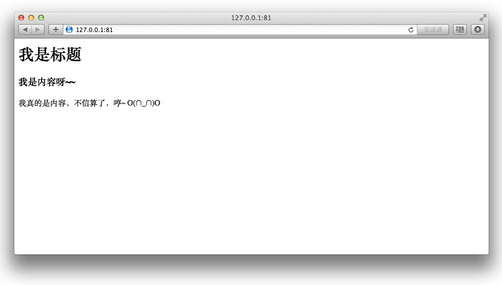
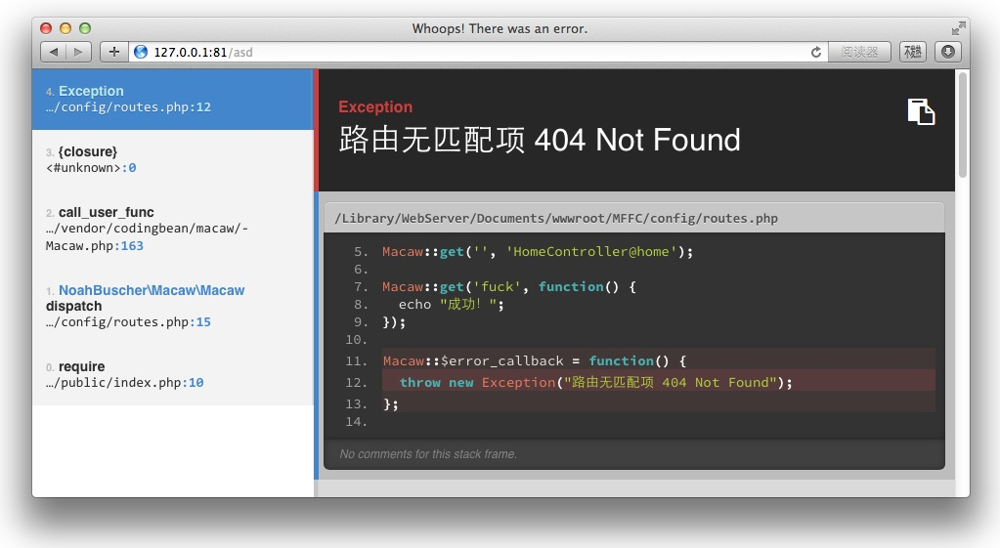
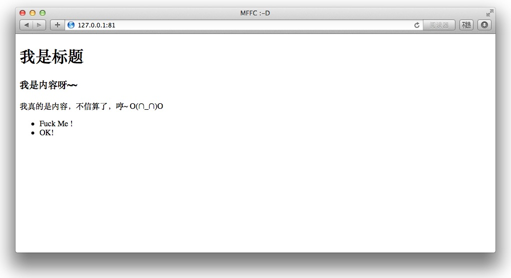

利用 Composer 完善自己的 PHP 框架（一）——视图装载
本教程示例代码见 https://github.com/johnlui/My-First-Framework-based-on-Composer
回顾
经过了上一个 系列教程 《利用 Composer 一步一步构建自己的 PHP 框架》 ，我们组建了一个具有 路由 、 MVC 架构 和 ORM 功能的基础框架 MFFC 。接下来我们继续完善这个项目。
我们先从目前用着 最不爽 的地方——视图装载下手。我们将封装一个视图装载类，让它来帮我们装载视图，并把变量传递进视图。这个类将只暴露出来几个简单的接口，让我们在控制器里面用的爽，让我们一边写代码一边笑。真的笑，笑出声。:-D
正文
构思
视图装载类要做的工作其实很简单：
1. 根据视图名称找到视图文件，支持文件夹
2. 更加方便，更加优雅地把变量的值传递进视图
本文中我们将不会不引入模板引擎，只做装载文件和传递变量的功能。
基础准备
我们要引入视图装载器，这就正式打开了组件化的大门，所以我们需要做一些准备工作。
启动流程组件化
将 public/index.php 里面的代码分离一部分到启动器（bootstrap），新建 MFFC/bootstrap.php 文件：
<?php
use Illuminate\Database\Capsule\Manager as Capsule;
// 定义 BASE_PATH
define('BASE_PATH', __DIR__);
// Autoload 自动载入
require BASE_PATH.'/vendor/autoload.php';
// Eloquent ORM
$capsule = new Capsule;
$capsule->addConnection(require BASE_PATH.'/config/database.php');
$capsule->bootEloquent();
修改 public/index.php 为：
<?php
// 定义 PUBLIC_PATH
define('PUBLIC_PATH', __DIR__);
// 启动器
require PUBLIC_PATH.'/../bootstrap.php';
// 路由配置、开始处理
require BASE_PATH.'/config/routes.php';
这时候我们就完成了 入口文件 和 启动器 的分离，并定义了两个全局常量 BASE_PATH 和 PUBLIC_PATH 。
在这里我们需要特别注意一点：“引入路由配置文件” 这一步并不只是简单地引入了一个配置文件，路由文件的最后一行 Macaw::dispatch(); 才是 真正执行某个控制器中某个 function 的地方，所有准备条件都应该在载入路由文件之前完成，例如 Eloquent 的初始化，还有以后我们要使用的 Composer 包的初始化等等。
引入错误页面提示组件
我们选择 filp/whoops 作为我们错误提示组件包。
修改 composer.json ：
"require": {
"codingbean/macaw": "dev-master",
"illuminate/database": "*",
"filp/whoops": "*"
},
运行 composer update ，然后在 bootstrap.php 的最后添加：
// whoops 错误提示 $whoops = new \Whoops\Run; $whoops->pushHandler(new \Whoops\Handler\PrettyPageHandler); $whoops->register();
刷新 http://127.0.0.1:81 ，你得到的应该还是这个页面：

下面我们将增加路由配置中 无匹配项 的错误页面，修改 config/routes.php ：
<?php
use NoahBuscher\Macaw\Macaw;
Macaw::get('', 'HomeController@home');
Macaw::get('fuck', function() {
echo "成功！";
});
Macaw::$error_callback = function() {
throw new Exception("路由无匹配项 404 Not Found");
};
Macaw::dispatch();
现在访问一个随意输入的 URL，例如 http://127.0.0.1:81/asd ，我们会看到以下画面：

是不是有一种很熟悉的感觉！
很不幸，这个错误提示包正是 Laravel 采用的那个，所以，我们可爱的 MFFC 框架在长大以后还是成了 Laravel 的样子。%>_<%
实现装载器
完成基础准备以后我们正式开始制造视图装载器。
视图装载器是一个可插拔组件，我们应该把所有可插拔组件全部归到一处，在 MFFC 中建议放在 MFFC/services 下。
CI 框架提供的基础组件库叫 helpers ，Laravel 使用 illuminate/support 包提供一些可重用的系统函数。实际上 “illuminate/support” 这个包已经被我们的 ORM 包 “illuminate/database” 依赖了，现在 MFFC 框架里面已经可以直接使用。，这个包的中文文档见：http://laravel-china.org/docs/helpers
我们并没有像 CI 框架那样把视图装载器放到系统核心，有以下两个原因：
- 基于命名空间与自动加载的调用方式更加节省资源
- 在移动互联网和大前端愈演愈烈的时代，后端越来越 API 化、 json 化。很多时候都不到视图，没有必要再增加无畏的消耗。
下面开始着手实现视图装载器。
新建 MFFC/services 文件夹，并修改 composer.json 把这个文件夹下的所有类自动归入根命名空间：
"autoload": {
"classmap": [
"app/controllers",
"app/models",
"services"
]
}
新建 services/View.php 文件，内容如下：
<?php
/**
* \View
*/
class View
{
const VIEW_BASE_PATH = '/app/views/';
public $view;
public $data;
public function __construct($view)
{
$this->view = $view;
}
public static function make($viewName = null)
{
if ( ! $viewName ) {
throw new InvalidArgumentException("视图名称不能为空！");
} else {
$viewFilePath = self::getFilePath($viewName);
if ( is_file($viewFilePath) ) {
return new View($viewFilePath);
} else {
throw new UnexpectedValueException("视图文件不存在！");
}
}
}
public function with($key, $value = null)
{
$this->data[$key] = $value;
return $this;
}
private static function getFilePath($viewName)
{
$filePath = str_replace('.', '/', $viewName);
return BASE_PATH.self::VIEW_BASE_PATH.$filePath.'.php';
}
public function __call($method, $parameters)
{
if (starts_with($method, 'with'))
{
return $this->with(snake_case(substr($method, 4)), $parameters[0]);
}
throw new BadMethodCallException("方法 [$method] 不存在！.");
}
}
运行 composer dump-autoload ，完成以后，我们就可以在控制器中直接调用这个类了。
修改 controllers/HomeController.php ：
<?php
/**
* \HomeController
*/
class HomeController extends BaseController
{
public function home()
{
$this->view = View::make('home')->with('article',Article::first())
->withTitle('MFFC :-D')
->withFuckMe('OK!');
}
}
修改 controllers/BaseController.php ：
<?php
/**
* \BaseController
*/
class BaseController
{
protected $view;
public function __construct()
{
}
public function __destruct()
{
$view = $this->view;
if ( $view instanceof View ) {
extract($view->data);
require $view->view;
}
}
}
修改 app/views/home.php ：
<!DOCTYPE html>
<html lang="en">
<head>
<meta charset="UTF-8">
<title><?php echo $title ?></title>
</head>
<body>
<div class="article">
<h1><?php echo $article['title'] ?></h1>
<div class="content">
<?php echo $article['content'] ?>
</div>
</div>
<ul class="fuckme">
<li>Fuck Me !</li>
<li>
<?php echo $fuck_me ?>
</li>
</ul>
</body>
</html>
刷新，你将看到以下页面：

至此，视图装载器实现完成。
下面我大致说一下设计视图装载器的基本思路：
- 这个视图装载器类模仿了 Laravel 的 View 类，它实现了一个静态方法 make ，接受视图名称作为参数，以 . 作为目录的间隔符。
- make 静态方法会检查视图名称是否为空，检查视图文件是否存在，并给出相应的异常。这就是我们引入异常处理包的原因。
- 视图名称合法且文件存在时，实例化一个 View 类的对象，返回。
- 使用 with('key', $value) 或者优雅的 withKey($value) 来给这个 View 对象插入要在视图里调用的变量。 withFuckMe($value) 将采用蛇形命名法被转化成 $fuck_me 供视图使用。
- 最终组装好的 View 对象会被赋给 HomeController 的成员变量 $view ，这个变量是从 BaseController 中继承得来。
- 父类 BaseController 中的析构函数 __destruct() 将在 function home() 执行完成后处理这个成员变量： extract 出视图要用到的变量， require 视图文件，将最终运算结果发送给浏览器，流程结束。
下一步：利用 Composer 完善自己的 PHP 框架（二）——发送邮件

评论：
2016-03-15 00:01


2016-07-13 10:19